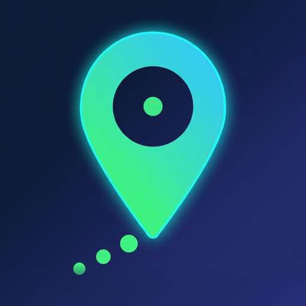

The GPS only runs while you move.
WhereIWas keeps a complete record of where you have been through a day’s work, several days in the field or a long trip — and gives you back the battery that a permanently-on tracker would have spent.
Download on the App Store Free · iPhone · iOS 17 or later
A twelve-hour day
receiver on 5 h 50 of 12 h
How it decides
Movement wakes it. Stillness is proved before it sleeps.
The motion coprocessor runs whether or not an app asks it to, so reading it is close to free. WhereIWas listens to it, to significant location changes and to visits — then turns the receiver on only once there is real evidence you are moving.
- Stationary GPS released, no track being written, nothing left running but what costs nothing: the motion coprocessor, the pedometer, significant location changes and visits. The rare point those last two produce is stored with its source, so you can tell it from a GPS fix.
- Probing A hint arrived. Full accuracy for up to 45 seconds — long enough for two consecutive fixes to agree that you are really moving, because one reading on its own is something CoreLocation gets wrong.
- Moving Confirmed. Accuracy and distance filter follow your speed, and change again when your speed does.
- Just stopped Two minutes without movement end the trip, but not the receiver. For five more minutes it keeps watching on a deliberately wide 50 m filter — cheap enough for a parked phone, crossed within seconds by a departure. A red light, a delivery, a set of traffic lights: setting off again is seen at once instead of waiting the minutes the coprocessor needs to classify a restart.
- Back to stationary Only once those five minutes pass with nothing moving. Then the receiver goes off.
Going toward movement is immediate; going back to rest is slow and has to be earned, twice over. That asymmetry is why the trace has no holes at the start of a trip — nor at the restart of one. The whole mechanism is written down: every signal, every threshold, every transition.
iOS shows the blue location indicator for as long as tracking is on, while you are parked as well as while you are moving. That is deliberate and there is no setting for it: what holds the indicator up is the same background session that keeps the next trip — which starts with the app in the background — able to record at all. Every duration on this page is a default; all of them are settings, and the five-minute watch can be set to zero if you would rather the receiver stopped the moment you do.
Accuracy
A car does not need a ten-metre filter.
Each detected activity gets a receiver profile of its own. Speed overrides the label when the two disagree, so a mislabelled drive still records like a drive — with one exception: 25 km/h is an ordinary cycling speed, so a cycling or running label keeps its own profile up to 45 km/h, a speed a bicycle cannot hold.
| Activity | Accuracy | Distance filter |
|---|---|---|
| Walking | Best | 10 m |
| Running, cycling | Best | 20 m |
| Driving | Navigation | 50 m |
| Unknown, no speed | Best | 10 m |
| Unknown, above 2.5 m/s | Best | 20 m |
| Above 7 m/s | Navigation | 50 m |
| Probing | Best | 0 m |
| Just stopped | Hundred metres | 50 m |
| Stationary | receiver off | |
Before anything is written, every fix is checked: accuracy worse than 50 m, timestamps in the future, readings older than 30 seconds, points out of order and exact duplicates are all dropped. Cached fixes that iOS replays when the receiver restarts are dropped with them.
Those four numbers are defaults, not the product. The accuracy limit, the staleness window, the duplicate distance, the two-minute stillness timeout, the five-minute watch after a stop and the length of a probe are all sliders in Settings, and the app shows you the same table live, with your own values in it.
The record
Every point carries its own context.
A coordinate on its own cannot be argued with or trusted. Each stored point keeps latitude, longitude and altitude, horizontal and vertical accuracy, speed and its accuracy, course, timestamp, the detected activity and how confident that detection was, the phase the app was in, the battery level and state, the session, and the receiver profile in force.
Audit trail
Turn it on and the app also records why. Every fix received, every check run — with the value measured and the threshold it was measured against — every state change, every time the receiver was stopped. When you need to explain a gap between 14:02 and 14:20, the explanation is already written down.
The audit trail is off by default and costs nothing while off. It turns over far faster than the track itself, so it keeps its own retention — seven days by default.
Export
GPX 1.1 for any mapping tool, with speed, course, accuracy, activity and battery carried in extensions. Or JSON with the whole record, ISO-8601 throughout. Both go out through the standard share sheet.
Export what you need rather than everything: today, the last seven days, a date range you pick, one recorded session, or the lot. The map screen draws the same selection before you send it.
In your language, in your units
The app is translated into nine languages — English, French, German, Spanish, Italian, Japanese, Dutch, Polish and Czech — and distances, speeds and altitudes follow a metric or imperial setting of their own, so you are not forced to change your phone's language to read miles.
Limits
What it cannot do.
These are iOS limits, not bugs, and no app can work around them. If a tracker claims otherwise, it is wrong about one of these.
- Between a reboot and the first unlock, nothing is recorded. File protection keeps the app from running until you unlock the device once. After that, recording resumes on the first movement.
- Force-quitting stops everything. Swipe the app out of the app switcher and iOS delivers it no more background events until you open it again.
- Coming out of a long stop can cost the first few hundred metres. A short stop is covered — the receiver is still watching for five minutes after you stop. But if iOS terminated the app while you were still, it wakes on a significant location change — roughly 500 m of movement.
- Always location permission is required. With While-Using, recording stops the moment the app is suspended.
- Without motion permission the battery suffers. Tracking still works, but the app has to lean on GPS to detect movement that the coprocessor would have reported for free.
- Low Power Mode can postpone maintenance. The background purge may not run; it also runs at launch and on demand.
Privacy
Nothing is uploaded.
There is no account, no server and no analytics. The app has no networking code and no third-party dependencies at all. Your track is a database file on your iPhone, and the only way it goes anywhere is if you export it yourself.